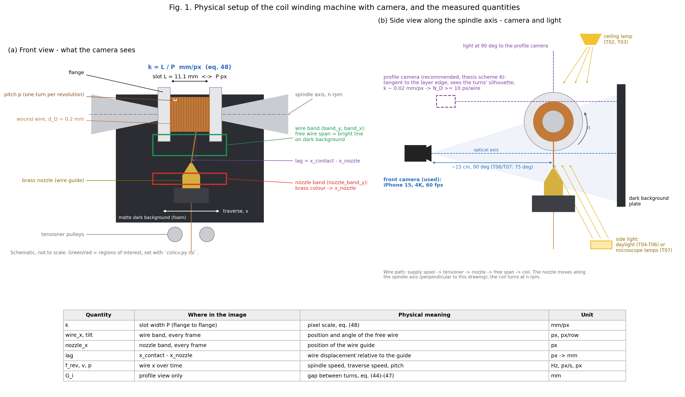
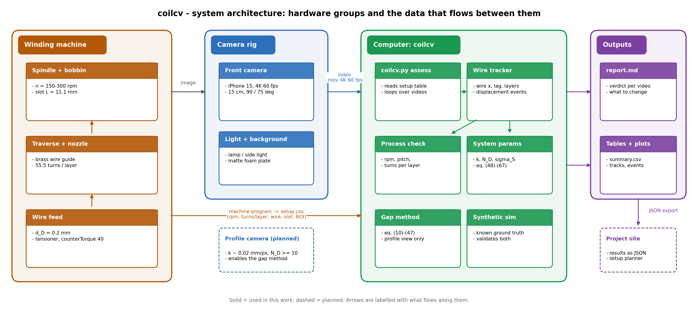
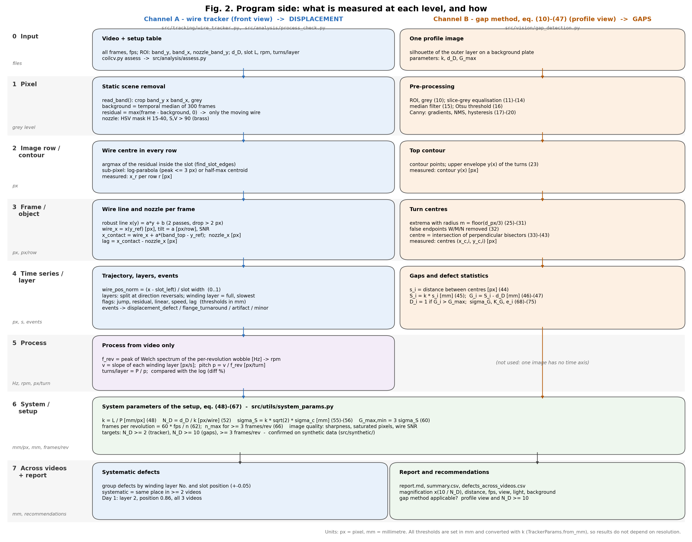
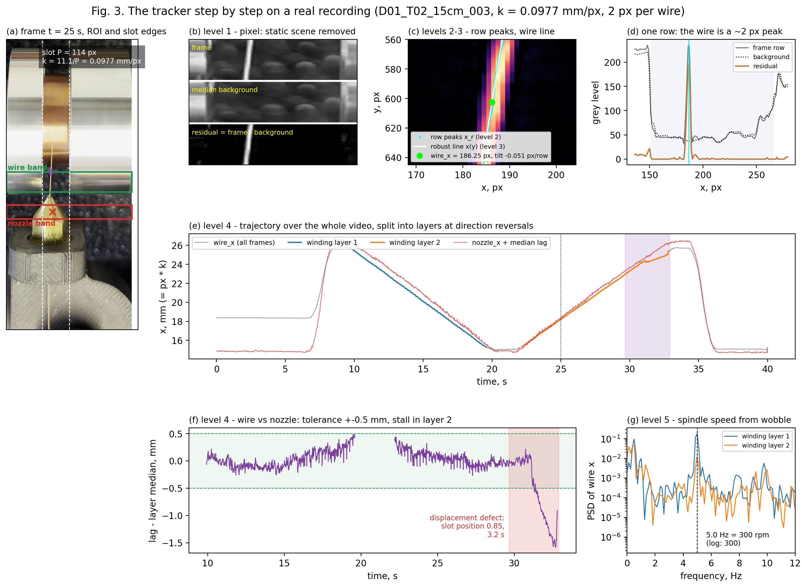
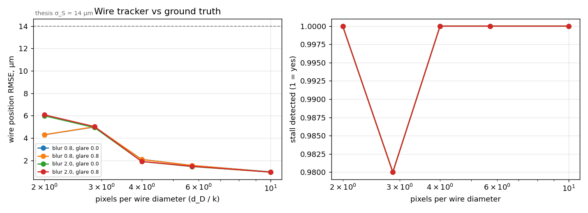
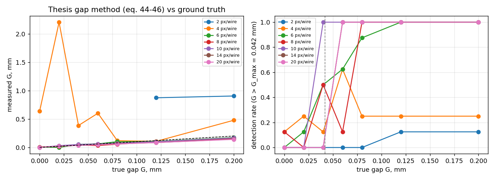
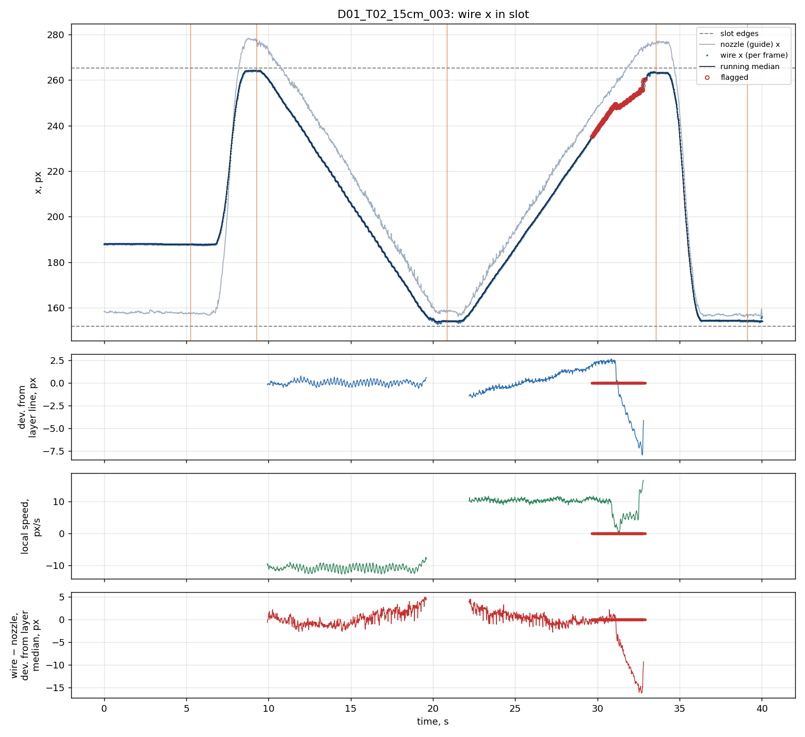
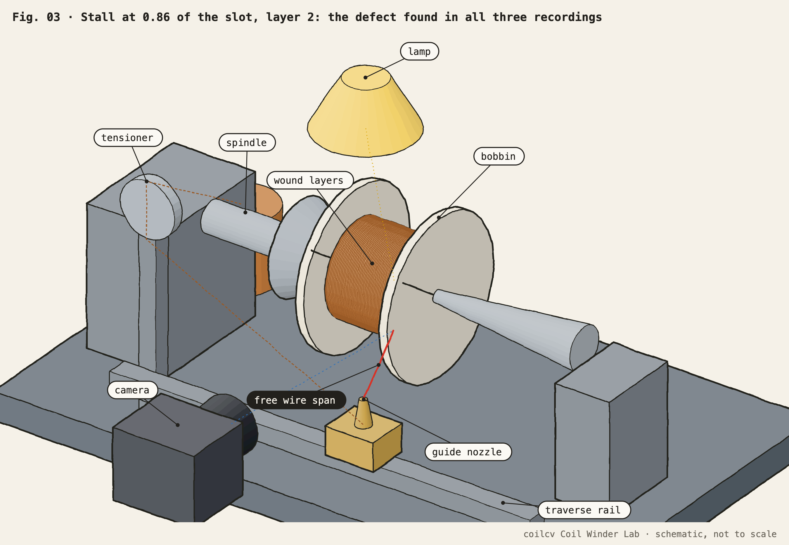

Abstract
Where is the wire, and where should it be?
In a coil winding machine the guide nozzle moves along the bobbin while the spindle turns, laying one turn per revolution. When the wire stops following the guide, the turns pile up or leave gaps, and the coil is scrap. This work builds a camera-based system that measures that wire displacement directly.
The system has two measurement channels:
- Wire tracker (front view). It runs on ordinary phone video. It measures the wire position with sub-pixel precision, the lag behind the nozzle, and the layers, and flags displacement events. It also recovers the spindle speed and the winding pitch from the video.
- Gap method (profile view, following Sun et al., 2023). It measures the gap between neighbouring turns, eq. (10)–(47).
A synthetic simulator with known ground truth sets the operating limits of both channels. A setup-assessment tool turns any user's videos into a report on what to change in the camera setup.
Physical setup
The machine, the camera, and what is measured where


Method
Two channels, eight measurement levels
A · Wire tracker front view
- remove the static scene with a temporal median
- find the wire in every image row with sub-pixel precision
- fit a robust line: wire position and tilt
- find the nozzle by its brass colour, compute the lag
- split into layers, flag events, classify them
B · Gap method profile view
- slice-grey equalisation, median filter, Otsu, Canny (10)–(20)
- top contour of the turns (23)
- extrema and false endpoints (25)–(32)
- turn centres from perpendicular bisectors (33)–(43)
- gap Gi = k·si − dD, defect statistics (44)–(75)


Validation on synthetic data
How many pixels per wire are enough?
The real recordings have no independent ground truth. So the simulator renders winding videos and profile silhouettes in which every wire position and gap is known. It sweeps the pixel scale, blur and glare, and runs the same code on them.


Results on real recordings
Three recordings, one systematic defect
| recording | k, mm/px | px / wire | frames / rev | tracked | rpm video / program | turns/layer video / program | defects |
|---|---|---|---|---|---|---|---|
| T02 · 300 rpm, nozzle crop | 0.098 | 2.0 | 12 | 100 % | 300 / 300 | 53.5 / 55.5 | 1 |
| T06 · 150 rpm, 75°, daylight | 0.114 | 1.8 | 24 | 100 % | 150 / 150 | 52.7 / 55.5 | 2 |
| T07 · 150 rpm, 75°, lamps | 0.116 | 1.7 | 24 | 100 % | 139 / 150 | 47.5 / 55.5 | 1 |
The same displacement defect appears in all three recordings at the same place: winding layer 2, 0.86 of the slot width, about 1.5 mm from the right flange. The wire stops following the nozzle for 3–4 s while the lag grows to about 1.6–2.0 mm. Different speeds and lighting give the same result, so the cause is in the winding process, not in the camera. The measured turns per layer are 3.6–14 % below the program, so the winding is not fully tight.

Interactive setup planner
The Coil Winder Lab
An interactive, isometric model of the winding machine and camera. Choose the camera, distance, fps and wire diameter, then wind a layer, inject a stall or open a gap. It shows what the camera would see, what coilcv would measure, and whether the setup reaches the targets.

- live k, px per wire, frames per revolution, minimum detectable gap
- wind, inject a stall at 0.86 of the slot, open a gap
- tracker accuracy taken from the real synthetic sweep
- "what the camera sees" at your pixel scale, next to the 10 px target
- replay of the real recording T02, pipeline levels linked to the code, a short quiz
Practical outcome
What to change in the setup
- Keep the front camera for displacement. 2 px per wire is enough to track the wire and detect stalls. A phone at 15 cm already does this.
- For gaps between turns, magnify ×5. Reach k ≈ 0.02 mm/px (≥ 10 px per wire) with a macro or tele lens. With the same lens that means about 3 cm, which is usually below the minimum focus distance.
- Add a profile view. Point the camera tangent to the layer edge, with a matte background plate behind the coil and light at 90°. Only this view shows the turns' silhouette.
- Keep ≥ 3 frames per revolution. At 60 fps that allows up to 1200 rpm.
- Investigate the process at 0.86 of the slot in layer 2. Start with the layer-start settings (looseEndRots, dwell at the flange).
Cite
@mastersthesis{coilcv2026,
title = {Computer Vision System for Wire Displacement Control in Coil Winding Process},
author = {Serant, Solomiia},
school = {Lviv Polytechnic National University},
year = {2026},
url = {https://github.com/somanuTori/coilcv}
}